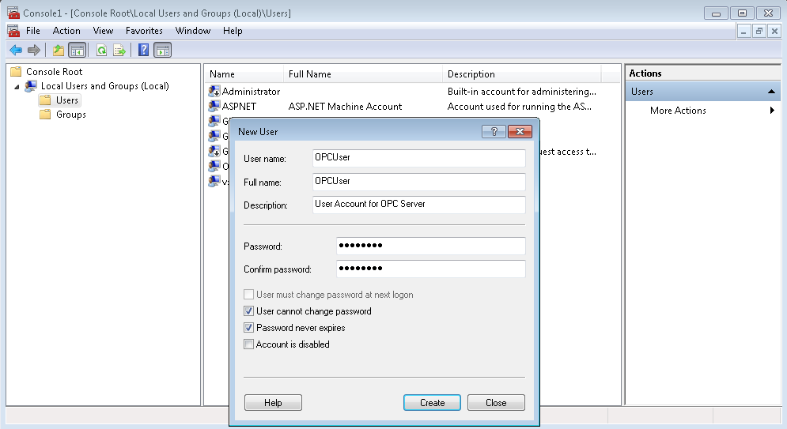

Set up Mutual User Account Recognition
It is necessary to define which users have access and launching permissions in DCOM applications on either the local computer or on computers belonging to the local network and domain. Consequently, it is necessary to ensure that both computers have access to the same user name and password combinations. User names and passwords must match on all the computers that require OPC access:
- When using Windows workgroups, each computer must have a complete list of all user accounts and passwords (see Add a Local User, below).
- When using a single Windows domain, user accounts are properly synchronized by the domain controller (see Add a Domain User, below).
- When using multiple Windows domains, you must either establish a trust between domains, or create a local user account for each affected computer.
Add a Local User
If the computer is in a workgroup, do the following to create a user account:
- In the Windows search box on the taskbar, enter MMC.
- Press ENTER.
- The Microsoft Management Console starts.
NOTE: Only users with administrator privileges can use the MMC. If the UAC (User Account Control) is enabled, it may happen that you are prompted for administrator password or confirmation. - In the Console left pane, select Local Users and Groups.
NOTE: If Local Users and Groups is not visible, it is probably because this snap-in has not been added to MMC. Proceed as follows to install it:
a. In the Console window, select File > Add/Remove Snap-in.
b. Select Local Users and Groups and click Add.
c. Select the Local computer option, click Finish and then click OK. - Select the Users folder.
- In the Console window, select Action > New User.
- In the New User dialog box, enter the appropriate information:
a. In the User name field, enter a name for the user (for example, OPCUser).
b. Enter the password and confirm it.
It is important to specify the password not leaving the field empty, because it is not possible to establish communication if a user account does not have a password.
c. Clear the option User must change password at next logon.
d. Select the following options: User cannot change password and Password never expires. - Click Create.
- Click Close.

Add a Domain User
If the computer is in a domain, to create a user account do the following:
- In the Windows search box on the taskbar, enter Control Panel.
- Press ENTER.
- In the Control Panel window, select System and Security > Administrative Tools > Active Directory Users and Computers.
- Select Domain and then select the Users folder.
- In the Console window, select Action > New User.
- In the New User dialog box, enter the appropriate information:
a. In the User name field, enter a name for the user (for example, OPCUser).
b. Enter the password and confirm it.
It is important to specify the password not leaving the field empty, because it is not possible to establish communication if a user account does not have a password. The password must respect the domain password policies.
c. Clear the option User must change password at next logon.
d. Select the following options: User cannot change password and Password never expires. - Click Next.
- Click Finish.